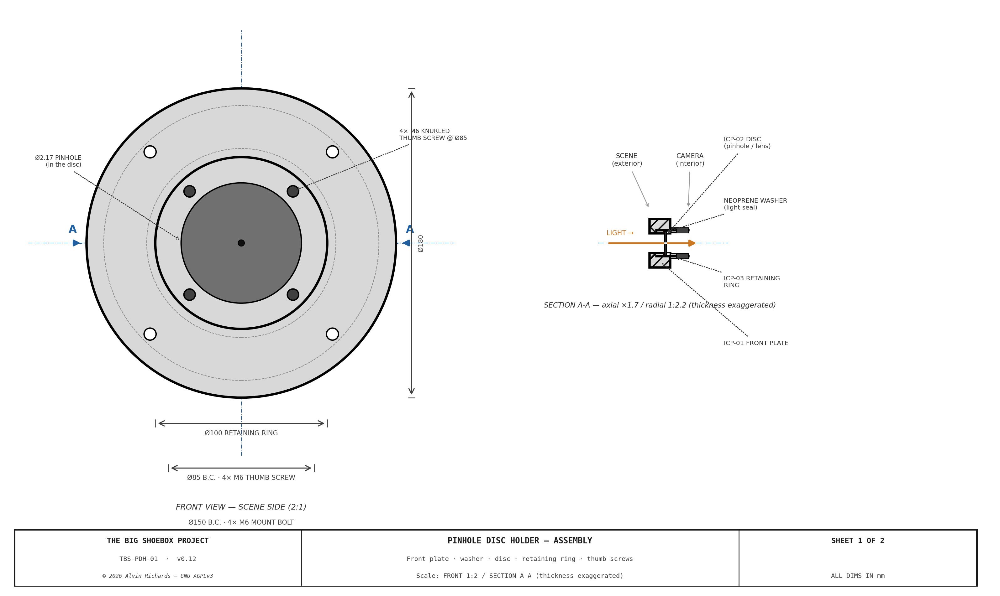
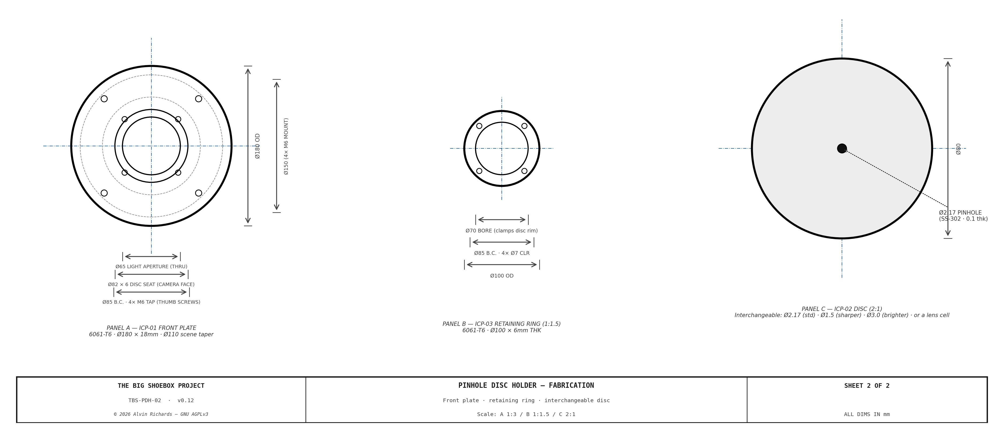

Pinhole Disc Holder (Front Board)¶
1. Purpose¶
The front board carries the pinhole at the scene-facing end of the container. This report specifies a simple quick-change disc/lens-board holder: an interchangeable Ø80 carrier is clamped against a neoprene light-seal washer by a circular retaining ring held with four thumb screws. Carriers swap in seconds — a pinhole board (any diameter), or a large-format lens board taking a Copal/Compur 0, 1 or 3 shutter — with no tools beyond fingers. It supersedes the standard Ø600 interchangeable pinhole/lens plate: one compact holder does both jobs.
There is no tilt or swing. A pinhole is a point aperture: the image is a central projection through the pinhole point, determined only by the pinhole's position and the film plane, and is completely independent of the orientation of the plate that holds it. Tilting a pinhole board therefore does nothing to the image (it only moves the pinhole point by the small pivot offset). All perspective and keystone control lives in the film-plane mechanism (the rear standard), where tilting the film plane genuinely changes the projection. The earlier tilt-swing front board was retired for this reason — see the changelog.
2. Mechanism Overview¶
The holder is a compact front board mounted to the wall-frame adapter with a small bolt pattern (the adapter is part of this design, so it carries the matching pattern). Four elements:
- ICP-01 Front plate — Ø180 round × 18mm 6061-T6. Mounts to the wall-frame adapter (4× M6 @ Ø150); a Ø110 scene-side taper bore converging to a Ø65 light-aperture clearance bore; a Ø82 × 6mm counterbore that seats the carrier and reacts the weight of a lens; four M6 taps on a Ø85 circle for the thumb screws.
- Light-seal washer — Ø82 OD × Ø65 ID × 1.5mm neoprene. The carrier presses against it, sealing the aperture under the clamp.
- Interchangeable carrier (ICP-02) — Ø80 outer diameter: either a pinhole board (SS-302 shim, pinhole Ø per selection) or a large-format lens board carrying a Copal/Compur 0, 1 or 3 shutter (see §3).
- Circular retaining ring (ICP-03) — Ø100 OD × Ø70 bore × 6mm 6061-T6. The Ø70 bore is smaller than the carrier so the ring clamps its rim; it clears the light path.
- Four thumb screws — M6 knurled, on the Ø85 circle, into the plate.
Quick-change: loosen the four thumb screws → lift the retaining ring → swap the carrier → replace the ring → finger-tighten the thumb screws. About 30 seconds, no tools.
Interactive 3D model — the Ø180 front plate, neoprene washer, interchangeable carrier, retaining ring and thumb screws. Drag to orbit, scroll to zoom; click the ring to pull the retaining ring + thumb screws out along the optical axis and reveal the interchangeable carrier and the plate's four tapped holes (click again to re-seat).
The drawing set (TBS-PDH, 2 sheets): Sheet 1 — assembly + Section A-A (plate, washer, carrier, ring, thumb screws, and the light path); Sheet 2 — fabrication blueprints (front plate + retaining ring + carrier).


3. Interchangeable Carriers — Pinhole & Large-Format Lens¶
Every carrier is Ø80 OD, clamped by the retaining ring, so the camera's front optic changes in seconds.
Pinhole boards¶
| Board | Aperture | Effect |
|---|---|---|
| Standard pinhole | Ø2.17mm | Rayleigh optimum for the 2,362mm focal length — sharpest pinhole image (f/1088) |
| Sharper pinhole | Ø1.5mm | Finer detail, ~2× dimmer (longer exposure) |
| Brighter pinhole | Ø3.0mm | ~2× brighter (shorter exposure), softer image |
The Rayleigh-optimum pinhole diameter is d = 1.9·√(f·λ) = Ø2.17mm at λ = 550nm, giving f/1088.
Large-format lens boards¶
The same Ø80 carrier accepts a lens board drilled for a standard large-format shutter, converting the camera to a lens optic (sharp, fast, controllable aperture). The Ø65 light aperture clears the whole Copal/Compur range:
| Shutter | Lens-board hole | Fits (Ø80 carrier / Ø65 aperture)? |
|---|---|---|
| Copal / Compur 0 | 34.6mm | ✅ |
| Copal / Compur 1 | 41.6mm | ✅ |
| Copal / Compur 3 | 61.5mm | ✅ (61.5 < Ø65 aperture; ~9mm rim on the Ø80 board) |
Board-hole diameters per the Intrepid Camera Large-Format Lens Explorer (§11).
Carrying a lens's weight. A large-format lens is cantilevered forward of the board, so the retention is designed to react its weight and tipping moment: the board seats 6mm deep in the Ø82 counterbore (which takes the shear and the moment against its wall — not the clamp), and the Ø100 × 6mm ring is drawn down by four M6 knurled thumb screws (up from M5) for axial clamp force. For a heavy, permanently-mounted Copal 3 lens the thumb screws are simply run down firm; the seat, not the screws, carries the load.
4. Optical Specification¶
| Parameter | Value | Note |
|---|---|---|
| Focal length | 2,362mm | Container interior depth |
| Standard pinhole Ø | 2.17mm | Rayleigh optimum, λ=550nm |
| f-number | f/1088 | f / d |
The image is a central projection through the pinhole point. Tilt, swing, rise/fall and other perspective movements are provided by the film-plane (rear standard) mechanism — see the Film Plane Mechanism Report, which also holds the (correct) distortion renders.
5. Light Sealing¶
The neoprene washer seals the carrier-to-plate joint when the retaining ring is clamped down — a single static compression seal, no moving parts and no bellows. The Ø110 taper bore on the scene side and the Ø65 clearance bore behind the carrier form the light path; the carrier (pinhole or lens) is the only opening. The plate-to-adapter joint is light-sealed by a thin gasket at the mount interface (or an O-ring in the adapter).
6. Wall Mounting¶
The pinhole (nose) end wall of the container is corrugated steel, so the front plate cannot seat on it directly. A flat steel wall-frame adapter plate is welded/bolted over the corrugation to present a flat datum, with an aperture cut through the corrugation larger than the Ø110 taper bore. The Ø180 front plate bolts to that adapter via its 4× M6 / Ø150 pattern.
7. Quick-Change Procedure¶
No special tooling — finger-operated thumb screws.
- Loosen the four M6 knurled thumb screws (fingers).
- Lift the circular retaining ring off.
- Remove the carrier from the Ø82 counterbore seat.
- Fit the new carrier (a pinhole board, or a lens board) into the seat, against the washer.
- Replace the retaining ring and finger-tighten the four thumb screws evenly.
Swap time: about 30 seconds. The whole front board can also be unbolted from the wall-frame adapter (4× M6) if the plate itself ever needs service.
8. Machining Tolerances¶
| Feature | Nominal | Tolerance | Importance |
|---|---|---|---|
| Front-plate carrier counterbore Ø82 | Ø82.000 | H7: +0.035/0.000 | Carrier seats concentric with the optical axis; reacts a lens's weight/moment |
| Carrier seat depth | 6.000mm | +0.1/0.0 | Positive location + moment reaction for a lens board |
| Light-aperture bore Ø65 | Ø65.000 | +0.2/0.0 | Clearance only — clears a Copal 3 hole, must not vignette |
| Thumb-screw PCD Ø85 | Ø85.000 | ±0.2mm positional | Even clamp of the retaining ring |
| Retaining-ring bore Ø70 | Ø70.000 | ±0.1mm | Clamps the carrier rim without fouling the light path |
| Mount bolts M6 PCD | Ø150.000 | ±0.15mm positional | Must match the wall-frame adapter |
9. Parts List¶
The BOM is single-sourced from the parts registry (parts.py) and generated below. Purchased hardware (thumb screws, mount bolts, washer) is catalog; the raw 6061 stock, the pinhole board set / lens boards, and the fab/finishing services (CNC, anodize) carry SKU pending — source.
| Item | Spec | Qty | Supplier | Est. cost |
|---|---|---|---|---|
| ICP-01 front-plate stock — 6061-T6 round bar Ø190×22 | 6061-T6 round bar Ø190×22mm — machined to the Ø180×18 front plate (Ø65 aperture, Ø110 scene taper, Ø82 carrier seat 6 deep, 4× M6 mount @ Ø150 + 4× M6 tap). SKU pending — source. | 1 ea | Metal Supermarkets / Online Metals | $22 |
| ICP-03 retaining-ring stock — 6061-T6 | 6061-T6 stock — machined to the Ø100 OD × Ø70 bore × 6 retaining ring (4× M6 clearance @ Ø85). Can be cut from the plate offcut. SKU pending — source. | 1 ea | Metal Supermarkets / Online Metals | $8 |
| Neoprene light-seal washer (Ø82×Ø65×1.5) | Neoprene washer Ø82 OD × Ø65 ID × 1.5mm — the carrier presses against it under the retaining ring, sealing the aperture. Cut from neoprene sheet or a stock washer. SKU pending — source. | 1 ea | McMaster-Carr / Grainger | $3–$6 |
| Pinhole board set — SS-302 (Ø2.17 / Ø1.5 / Ø3.0) | Ø80 × 0.1mm SS-302 laser-drilled pinhole boards — Ø2.17 (Rayleigh optimum), Ø1.5 (sharper), Ø3.0 (brighter). 3 off (the interchangeable set). SKU pending — quote (Lenox Laser). | 3 ea | Lenox Laser / Edmund Optics | $60–$120 |
| Ø80 lens board — Copal/Compur 0/1/3 (optional) | Ø80 × ~4mm 6061 lens board drilled for a Copal/Compur 0 (34.6), 1 (41.6) or 3 (61.5) shutter — drops into the holder to run the camera as a lens optic. The large-format LENS itself is user-supplied (out of BOM). Optional. SKU pending — source. | 1 ea | SK Grimes / Local fab | $10–$30 |
| M6 knurled thumb screws, 4× (retaining ring) | M6 knurled-head thumb screws — clamp the retaining ring (lens-board clamp force), finger-tightened for quick carrier change. 4 off. SKU pending — source. | 4 ea | McMaster-Carr / Bolt Depot | $8–$16 |
| M6×20 SHCS 18-8 SS, 4× (plate → adapter) | 4 off — mount the Ø180 plate to the wall-frame adapter at Ø150. M6×20 SHCS 18-8 SS. SKU pending — source. | 4 ea | McMaster-Carr / Bolt Depot | $4 |
| CNC machining — front plate + retaining ring (service) | Machine the Ø180 front plate (Ø65 aperture, Ø110 scene taper, Ø82 counterbore 6 deep, 4× M6 mount @ Ø150 + 4× M6 tap) and the Ø100 retaining ring from 6061-T6. SKU pending — fab quote. | 1 job | Fictiv / ProtoLabs | $150–$350 |
| Anodize — front plate + ring (service) | Black anodize the front plate + retaining ring (matte, non-reflective at the aperture). SKU pending — shop quote. | 1 job | Pac-Nor Anodizing | $40–$80 |
| Front-Board total | $305–$636 |
10. Maintenance¶
| Interval | Action |
|---|---|
| Each disc change | Inspect the neoprene washer for a clean, unbroken seat; replace if nicked or set |
| Every 6 months | Check the thumb screws are finger-tight and the retaining ring seats flat |
| As needed | Store spare pinhole boards flat in a protective sleeve — the SS-302 shim is easily creased |
11. Source References¶
- Lenox Laser Precision Pinholes — Pinhole board fabrication (Ø2.17mm and alternates, SS-302 shim).
- Intrepid Camera — Large-Format Lens Explorer — Large-format lens data and the Copal/Compur 0/1/3 lens-board hole diameters (34.6 / 41.6 / 61.5mm).
- Film Plane Mechanism Report — Rear standard (film-plane) tilt/swing and the correct distortion renders.
- Pinhole Report — Pinhole optics and the wall-frame interface.
- McMaster-Carr — Knurled Thumb Screws — M6 knurled thumb screws for the retaining ring.
- McMaster-Carr — Neoprene Washers / Rubber Sheet — Light-seal washer stock.